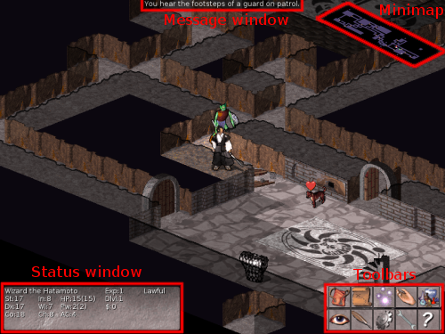
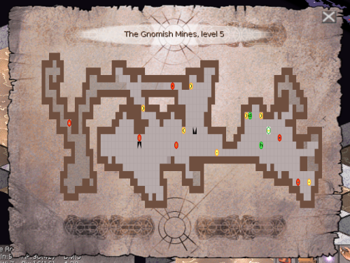
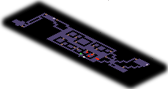
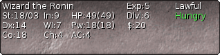
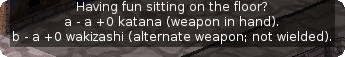
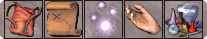

n the screen is a view of a section of the current dungeon level; as you explore more of the level, it appears on the screen in front of you. A new dungeon is generated every time you play; even the authors still find it an entertaining and exciting game despite having won several times.
In the corners of the screen you will also see your current status, 2 toolbars that allow access to important commands and the minimap which keeps you from getting lost. You can disable the minimap and the toolbars if you want to.
Traditionally NetHack and SLASH'EM use a text-mode interface that displays single characters for every element of the dungeon. Vulture's replaces this with a fully graphical view of the dungeon, which makes learning the game easier. However the fully graphical view has the disadvantage that the level can no longer be displayed completely on the screen. To offset this disadvantage Vulture's has a map and a minimap.
2.1 The map
The map shows you an abstract view of the entire level.
Monsters are represented by green circles containing a letter denoting the monster's class.
Objects are yellow and also contain a letter to indicate the type of object.
Traps are displayed in red. Since nethack traditionally uses the '^'
symbol for all traps the trap glyphs on the map instead contain tiny images to make it possible
to distinguish between them visually.
Other parts of the dungeon such as fountains, altars and sinks use small graphics
You can move around and perform actions while the map open: clicking on an empty spot will cause you to move there; right-clicking anywhere will bring up the context-menu for that spot and so on.
2.2 The minimap
The minimap is another means for you to keep an eye on your surroundings. For example it allows you to know about monsters that are already in sight, but not yet within the area shown in the main view. The minimap uses colored dots to represent different items of interest:
- You are shown in white
- Your pet is green
- Other inhabitants of the dungeon (even peaceful ones) are red
- Stairs are gray
- Doors are brown
Left-click on a spot on the minimap to move there.
Right-click anywhere on the minimap to center the main view on that spot.
You may disable the minimap in the interface options if you don't need it.
2.3 The status window
The statuswindow contains several cryptic pieces of information describing your current status. Here are explanations of what the various status items mean:
| Rank | Your character's name and professional ranking (based on the experience level). |
| Strength | A measure of your character's strength; one of your six basic attributes. A human character's attributes can range from 3 to 18 inclusive; non-humans may exceed these limits (occasionally you may get super-strengths of the form 18/xx, and magic can also cause attributes to exceed the normal limits). The higher your strength, the stronger you are. Strength affects how successfully you perform physical tasks, how much damage you do in combat, and how much loot you can carry. |
| Dexterity | Dexterity affects your chances to hit in combat, to avoid traps, and do other tasks requiring agility or manipulation of objects. |
| Constitution | Constitution affects your ability to recover from injuries and other strains on your stamina. |
| Intelligence | Intelligence affects your ability to cast spells and read spellbooks. |
| Wisdom | Wisdom comes from your practical experience (especially when dealing with magic). It affects your magical energy. |
| Charisma | Charisma affects how certain creatures react toward you. In particular, it can affect the prices shopkeepers offer you. |
| Alignment | Lawful, Neutral, or Chaotic. Often, Lawful is taken as good and Chaotic as evil, but legal and ethical do not always coincide. Your alignment influences how other monsters react toward you. Monsters of a like alignment are more likely to be non-aggressive, while those of an opposing alignment are more likely to be seriously offended at your presence. |
| Dungeon Level | How deep you are in the dungeon. You start at level one and the number increases as you go deeper into the dungeon. The Amulet of Yendor is reputed to be somewhere beneath the twentieth level. |
| Gold | The number of gold pieces you are openly carrying. Gold which you have concealed in containers is not counted. |
| Hit Points | Your current and maximum hit points. Hit points indicate how much damage you can take before you die. The more you get hit in a fight, the lower they get. You can regain hit points by resting, or by using certain magical items or spells. The number in parentheses is the maximum number your hit points can reach. |
| Power | Spell points. This tells you how much mystic energy (mana) you have available for spell casting. Again, resting will regenerate the amount available. |
| Armor Class | A measure of how effectively your armor stops blows from unfriendly creatures. The lower this number is, the more effective the armor; it is quite possible to have negative armor class. |
| Experience | Your current experience level and experience points. As you adventure, you gain experience points. At certain experience point totals, you gain an experience level. The more experienced you are, the better you fight and withstand magical attacks. Many dungeons show only your experience level here. |
| Time | The number of turns elapsed so far, displayed if you have the time option set. |
| Hunger status | Your current hunger status, ranging from Satiated down to Fainting. If your hunger status is normal, it is not displayed. |
Additional status flags may appear below the hunger status: Conf when you're confused, FoodPois or Ill when sick, Blind when you can't see, Stun when stunned, and Hallu when hallucinating.
Some items in your staus display will be colored. The colors range from green (take note) to red (you are about to die!)
2.4 The message window
The message window at the top of the screen is used for things that are impossible to represent visually. The message window displays 3 lines of messages by default. This works well even for small window sizes, however you may wish to increase this if you are playing Vulture's on a large screen.
Messages in the message window start out white and slowly fade over time, until they vanish completely after 16 turns. If you wish to view older messages, you can open the message log which shows the last 256 messages.
2.5 The toolbars
The upper of the two toolbars is called the action-toolbar. It's buttons (from left to right) are:
| Open Inventory | Shows the contents of your backpack. This is the same as pressing i. |
| Show map | Opens the map. Same as tab |
| Cast spell | Cast one of your spells. Same as Z |
| Extended commands | Show a menu of all extended commands. Same as # |
| Show discoveries | Display a list of all items whose nature you have discovered. Same as \ |
The lower of the two toolbars is called the help toolbar. It's buttons (from left to right) are:
| Look at | After clicking look at, you may select any object to get a description of it. Press esc to leave "look at" mode again. This is the same as pressing /. |
| Show message log | Opens the message log which contains the 256 most recent messages. Same as ctrl+P |
| Options | View or change game options. Same as O |
| Interface options | View or change interface options. Same as ctrl+O |
| View help | Display a list of the ingame help topics. Same as ? |
Both toolbars may be disabled seperately in the interface options, if you prefer to use the keyboard shortcuts